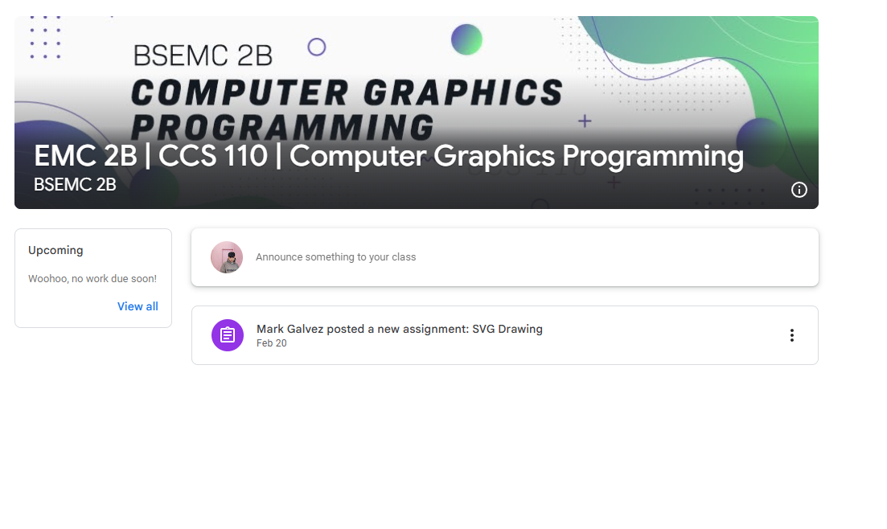
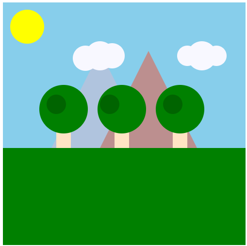
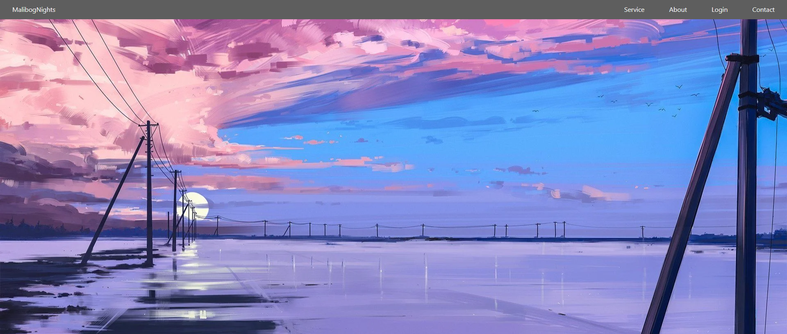
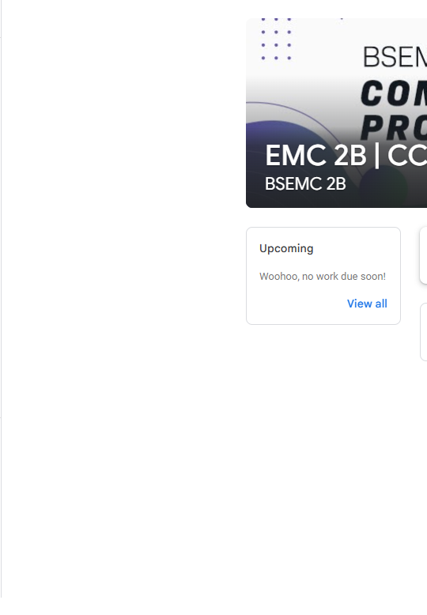
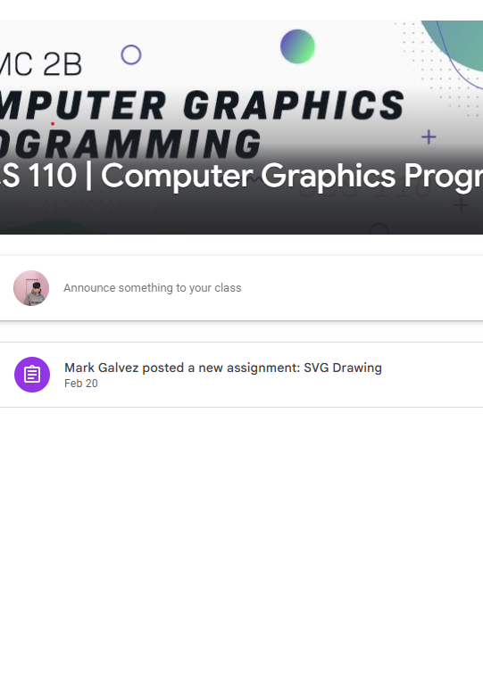
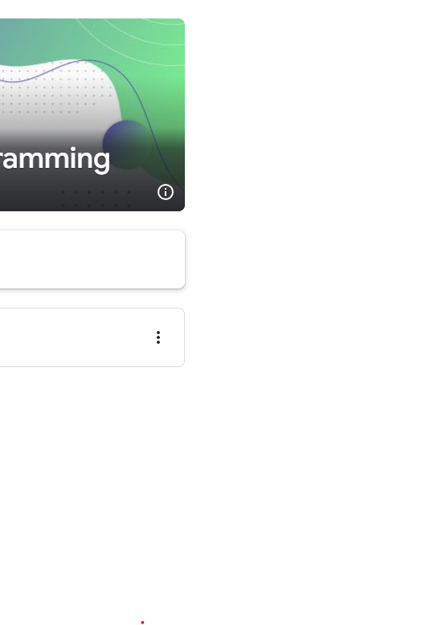

STUDENT
Hi! I’m Gabriel Guevara, currently pursuing a Bachelor of Science in Entertainment and Multimedia Computing (BSEMC), majoring in Game Development at the University of Caloocan City. This portfolio showcases my work and projects for the subject Computer Graphics. It reflects the skills I’ve developed, my creativity, and my passion for digital art and design.
Act 1
Act 2
Act 3




In this activity, we created a website based on a recipe that we personally liked. While developing the website, I learned how different files work together to create a functional webpage. I also explored how to properly align images and text to make the design visually appealing and user-friendly. This activity helped me understand the basic structure of HTML and how to style elements using CSS, especially when it comes to layout and visual presentation.

the second activity, we worked on creating an SVG (Scalable Vector Graphics) file that could be animated. Through this task, I discovered various tools and CSSproperties that can be used to bring static graphics to life with animation. I learned how to manipulate SVG elements using CSStransitions and keyframes, which gave me a better appreciation for how animations can enhance the interactivity and engagement of a website. These skills will be valuable for future web development projects where motion can improve user experience.

the third activity, we designed a responsive navigation bar that adapts to different screen sizes. This project taught me the importance of creating layouts that are functional and visually consistent across various devices, from mobile phones to desktop computers. I learned about media queries in CSS and how to apply different styles based on screen resolution. This activity helped me become more aware of the importance of responsive design and gave me a deeper understanding of how to plan and build websites that are accessible and user-friendly on all types of gadgets.
Phone Number: 09951297129